# 考试真题
一、填空题（共20分）
1.EDA的含义是（电子设计自动化），VHDL的含义是（超高速硬件描述语言）
2.请列出三个VHDL语言的数据类型。利于实数数据类型、位数据类型等。（整型）（字符型）（字符串型）
3.VHDL的运算符中，优先级别最低的是（逻辑运算符），优先级别最高的是（NOT，ABS）
4.试定义一个变量A，数据类型为4位标准矢量：(variable A:STD_LOGIC_VECRTOR(3 DOWNTO 0);)
5.在VHDL的数据对象中，（信号）（变量）可以多次赋予不同的值，只能在定义是复值的是（常量）
6.VHDL的子程序有（函数）和（常量）两种
7.VHDL源程序的文件名应当与（实体名）相同，否则无法通过编译
8.设D0为‘0’，D1为‘0’，D2为‘1’，D3为‘0’，D3&D2&D1&D0的运算表达结果是（0100）
9.使用quartusII软件中时，文本编辑文件的后缀名是:vhd，波形仿真文件的后缀名称是：vwf
二、简答题（20分，共4题，每道题5分）
1.简述cpld与fpga的异同，在实际应用是该如何选择？
答：CPLD更加适合完成各种算法和组合逻辑，FPGA更加适合于完成时序逻辑。换句话说，FPGA更加适合于触发器丰富的结构，而CPLD更加适合于触发器有限而乘积项丰富的结构。
CPLD的连续式布线结构决定了它的时序延迟是均匀的和可预测的，而FPGA的分段式补线结构决定了其延迟的不可预测性。
CPLD比FPGA使用起来更加方便。CPLD的编程采用E2PROM或者FASTFLASH技术，无需外部存储器芯片，使用简单。而FPGA的编程信息需要存放在外部存储器上，使用方法复杂。
2.简述VHDL语言和计算机C语言的区别
答：VHDL是硬件描述语言，面向硬件的。用于CPLD、FPGA等大规模可编程逻辑器件的。而C语言主要是面向软件的，是计算机编程。适用于普通计算机的，以及单片机，DSP等等。
3.简述when_else条件信号赋值语句和if_else顺序语句的异同。
答：WHEN_ELSE条件信号赋值语句中无标点，只有最后有分号；必须成对出现：是并行语句，必须放在结构体中。
IF_ELSE顺序语句中有分号；是顺序语句，必须放在进程中。
4，简述quartusII的设计流程
建立工作库文件夹：输入设计项目原理图/VHDL文件；将设计项目设置成PROJECT；选择目标器件；编译；引脚锁定并编译；编程下载/配置。
：原理图/HDL文本输入-⇒功能仿真-⇒综合-⇒适配-⇒时序仿真-⇒编程下载-⇒硬件测试
三、VHDL程序设计题目（60分）
1.用并行信号赋值语句设计4选1数据选择器。
LIBRARY IEEE;
USE IEEE.STD_LOGIC_1164.ALL;
ENTITY DEMO IS
PORT(
I0,I1,I2,I3: IN STD_LOGIC;
CH0,CH1: IN STD_LOGIC;
OUTPUT: OUT STD_LOGIC;
);
END DEMO;
ARCHITECTURE BEHAVE OF DEMO IS
SIGNAL SEL:STD_LOGIC_VECTOR(1 DOWNTO 0);
BEGIN
SEL<=CH1&CH0;
OUTPUT<=I0 WHEN SEL="00" ELSE
I1 WHEN SEL="01" ELSE
I2 WHEN SEL="10" ELSE
I3 WHEN SEL="11" ELSE
'0';
END BEHAVE; 2.编写一个数值比较器VHDL程序的进程，要求使能信号g低电平时比较器开始工作，输入信号p=q,输出equ为‘0’，否则为‘1’
PROCESS(P,Q,G)
BEGIN
IF G='0' THEN
IF P=Q THEN
EQU<='0';
ELSE
EQU<='1';
END IF;
ELSE
EQU<='1';
END IF;
END PROCESS; 3.在程序包中设计一个功能为四舍五入的过程。
函数定义应由两部分组成,即函数首和函数体. 在进程和结构体中不必定义函数首,而在程序包中必须定义函数首.
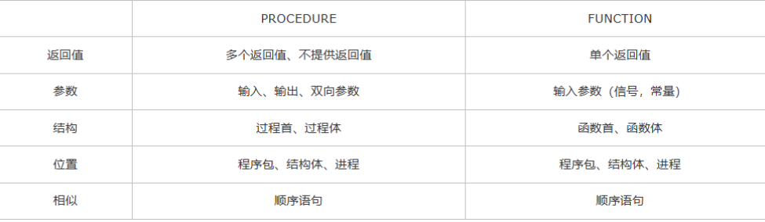
)--过程
LIBRARY IEEE;
USE IEEE.STD_LOGIC_1164.ALL;
PACKAGE PACK IS
PROCEDURE SUM(
A:IN STD_LOGIC_VECTOR(3 DOWNTO 0);B:OUT STD_LOGIC);
END PACK;
PACKAGE BODY PACK IS
PROCEDURE SUM(
A:IN STD_LOGIC_VECTOR(3 DOWNTO 0);B:OUT STD_LOGIC) IS
BEGIN
IF A="0100"OR A<"0100" THEN B<='0';
ELSE B<='1';
END IF;
END PROCEDURE SUM;
END PACK;
--函数
LIBRARY IEEE;
USE IEEE.STD_LOGIC_1164.ALL;
PACKAGE PACK IS
FUNCTION SUM(A:STD_LOGIC_VECTOR(3 DOWNTO 0);B:STD_LOGIC)RETURN STD_LOGIC;
END PACKAGE;
PACKAGE BODY PACK IS
FUNCTION SUM(A:STD_LOGIC_VECTOR(3 DOWNTO 0);B:STD_LOGIC)RETURN STD_LOGIC IS
BEGIN
IF A="0100" OR A<"0100" THEN B<='0';
ELSE B<='1';
END IF;
RETURN B;
END FUNCTION SUM;
END PACK; 4.设计一个异步清零的10进制计数器，并且在数码管上显示
LIBRARY IEEE;
USE IEEE.STD_LOGIC_1164.ALL;
ENTITY DEMO IS
PORT(
CLK,RES:IN STD_LOGIC;
LEDOUT:OUT STD_LOGIC_VECTOR(6 DOWNTO 0)
);
END DEMO;
ARCHITECTURE BEHAVE OF DEMO IS
SIGNAL CNT :STD_LOGIC_VECTOR(3 DOWNTO 0);
BEGIN
PROCESS(CLK,RES)
BEGIN
IF RES='1' THEN
CNT<=(OTHERS>='0');
ELSIF (CLK'EVENT AND CLK='1')THEN
IF(CNT="1001")THEN
CNT<="0000";
ELSE
CNT<=CNT+'1';
END IF;
END IF;
END PROCESS;
LEDOUT<="1110111"WHEN CNT="0000"ELSE
"0100100"WHEN CNT="0001"ELSE
"1011101"WHEN CNT="0010"ELSE
"1011011"WHEN CNT="0011"ELSE
"0111010"WHEN CNT="0100"ELSE
"1101011"WHEN CNT="0101"ELSE
"0101111"WHEN CNT="0110"ELSE
"1010010"WHEN CNT="0111"ELSE
"1111111"WHEN CNT="1000"ELSE
"1111101"WHEN CNT="1001"ELSE
"0000000";
END BEHAVE;
---a---
- -
b c
- -
---d---
- -
e f
- -
---g---5.设计一个由6个触发器构成的一步计数器，采用元件例化的方式生成
LIBRARY IEEE;
USE IEEE.STD_LOGIC_1164.ALL;
ENTITY D_FF IS
PORT(
D,CLK_S:IN STD_LOGIC;
Q:OUT STD_LOGIC;
NQ:OUT STD_LOGIC
);
END ENTITY D_FF;
ARCHITECTURE A_RS_FF OF D_FF IS
BEGIN
BIN_P_RS_FF:PROCESS(CLK_S)
BEGIN
IF CLK_S'EVENT AND CLK_S='1' THEN Q<=D;NQ<=NOT D;
END IF;
END PROCESS;
END ARCHITECTURE A_RS_FF;
LIBRARY IEEE;
USE IEEE.STD_LOGIC_1164.ALL;
USE IEEE.STD_LOGIC_UNSIGNED.ALL;
ENTITY demo12 IS
PORT(
CLK:IN STD_LOGIC;
Q:OUT STD_LOGIC_VECTOR(5 DOWNTO 0)
);
END demo12;
ARCHITECTURE BEHAVE OF demo12 IS
COMPONENT D_FF IS
PORT(
D,CLK_S:IN STD_LOGIC;
Q:OUT STD_LOGIC;
NQ:OUT STD_LOGIC
);
END COMPONENT;
SIGNAL S:STD_LOGIC_VECTOR(5 DOWNTO 0);
BEGIN
U0:D_FF PORT MAP(S(0),CLK,Q(0),S(0));
U1:D_FF PORT MAP(S(1),S(0),Q(1),S(1));
U2:D_FF PORT MAP(S(2),S(1),Q(2),S(2));
U3:D_FF PORT MAP(S(3),S(2),Q(3),S(3));
U4:D_FF PORT MAP(S(4),S(3),Q(4),S(4));
U5:D_FF PORT MAP(S(5),S(4),Q(5),S(5));
END BEHAVE;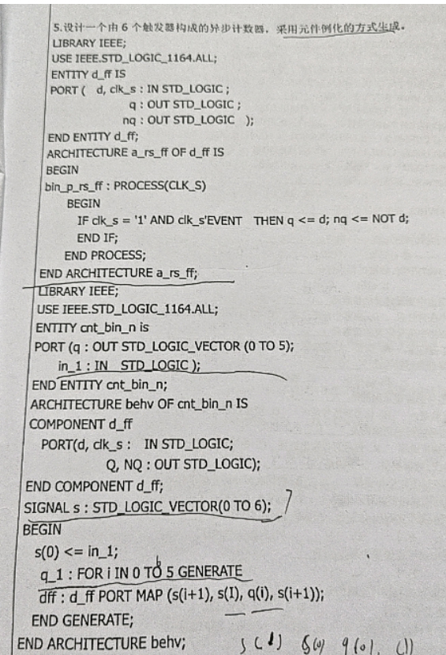
)标准函数，它用于将整数转换为 std_logic_vector 类型:
my_signal <= conv_std_logic_vector(255, 8); -- 结果为 "11111111"
在这个例子中，整数 255 被转换为一个 8 位宽的 std_logic_vector，结果是 "11111111"。
将整数或实数转换为 std_logic_vector 类型的过程:
to_stdlogicvector(255, my_vector); -- my_vector 将被赋值为 "11111111"
请注意，to_stdlogicvector 过程需要在进程内部调用，因为它涉及到信号赋值。
这个函数用于将 std_logic_vector 类型的信号转换为 BIT_VECTOR 类型。BIT_VECTOR 是一个类似数组的类型，其中的元素可以是 '0'、'1' 或 'U'（未初始化），它通常用于表示二进制数:
my_slv <= "10101010"; -- 将std_logic_vector初始化为特定的值
my_bv <= TO_BITVECTOR(my_slv); -- 将std_logic_vector转换为BIT_VECTOR 四、课本
1.1：EDA技术与ASIC设计和FPGA开发的关系：利用EDA技术进行电子系统设计的最后目标是完成专用集成电路ASIC的设计与实现。
FPGA在ASIC设计中的用途：FPGA实现ASIC设计的现场可编程器件。
1.7：CPLD是基于乘积项的可编程逻辑结构，FPGA是基于查找表的可编程逻辑结构
考试学习
第一章：EDA前言知识
EDA:电子设计自动化（Electronic Design Automation）
HDL：硬件描述语言（Hardware Description Language）
ISP:在系统可编程(In System Programmability)
单片机和FPGA比，不同之处在于，单片机是用已知的硬件来构建系统，主要是写软件。而FPGA是硬件“未知”（用EDA工具来设计），软件也要自己写。
EDA发展阶段
- 计算机辅助设计(Computer Assist Design，CAD)（20世纪70年代）
- 计算机辅助工程设计(Computer Assist Engineering Design，CAED)（20世纪80年代）
- 电子设计自动化(Electronic Design Automation，EDA)（20世纪90年代）
- 超大规模可编程逻辑器件（可编程ASIC）：主流器件：FPGA/CPLD
- 半定制或全定制ASIC
- 混合ASIC
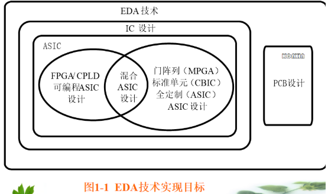
)基于EDA软件的FPGA/CPLD设计流程：
原理图/HDL 文本输入-⇒功能仿真-⇒综合-⇒适配-⇒编程下载-⇒硬件测试
PLD:可编程逻辑器件
CPLD:复杂可编程逻辑器件
FPGA:现场可编程门阵列
FPGA:
- 可编程逻辑单元
- 可编程输入/输出单元
- 可编程连线
CPLD:
- 可编程逻辑宏单元
- 可编程输入输出单元
- 可编程内部连线
第三章：CPLD与FPGA结构与应用
1.PLD
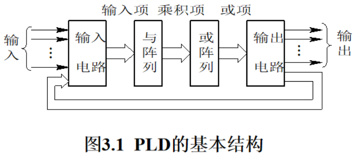
) 它由输入缓冲器、与阵列、或阵列、输出缓冲器等4部分功能电路组成20世纪70年代，PLD主要是PROM和PLA
- PROM(可编程只读存储器):与门阵列固定、或门阵列可编程（熔丝工艺，一次性编程使用）
- PLA(可编程逻辑阵列)：与门阵列可编程、或门阵列可编程（熔丝工艺，一次性编程使用）
- PAL(可编程阵列逻辑)：与门阵列可编程、或门阵列固定
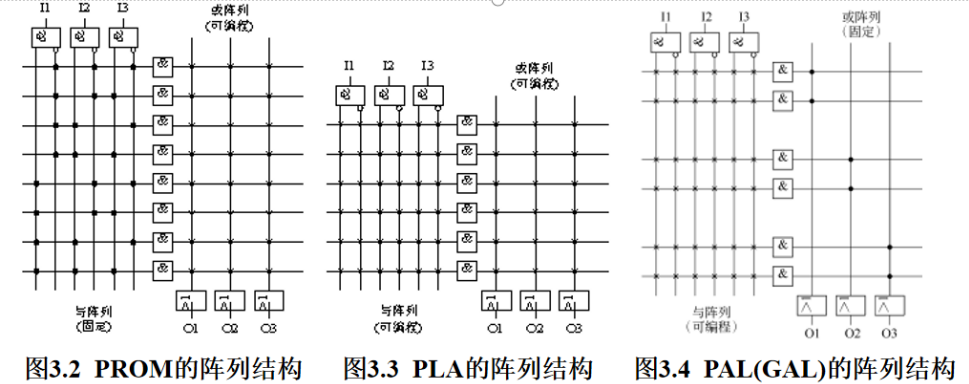
)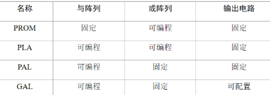
)
2.FPGA
FPGA器件的内部结构为LCA（逻辑单元阵列）
LCA：
- 周边的IOB(IO Block)(可编程输入/输出模块)
- 核心阵列的CLB(Configurable Logic Block)(可配置逻辑块)
- PI(可编程内部连线)（Programmable Interconnect）
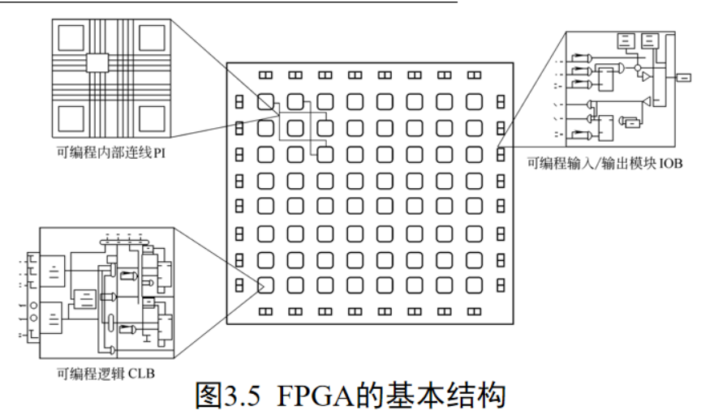
)- CLB:CLB是FPGA的基本逻辑单元，其内部又可以分为组合逻辑和寄存器两部分。组合逻辑电路实际上是一个多变量输入的PROM阵列，可以实现多变量任意函数；而寄存器电路是由多个触发器及可编程输入、输出和时钟端组成的。在FPGA中，所有的逻辑功能都是在CLB中完成的。
- IOB为芯片内部逻辑和芯片外部的输入端/输出端提供接口，可编程为输入、输出和双向I/O 3种方式。
- FPGA依靠对PI的编程，将各个CLB和IOB有效地组合起来，实现系统的逻辑功能。
工作形式：采用基于SRAM的查找表逻辑形式结构
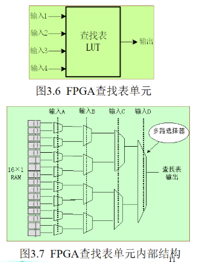
)一个N输入的查找表，需要SRAM存储N个输入构成的真值表，需要2^N个SRAM单元。
A,B,C,D由FPGA芯片的管脚输入后进入可编程连线，作为地址线连到LUT，LUT中已经事先写入了所有可能的逻辑结果，通过地址查找到相应的数据然后输出，这样组合逻辑就实现了
3.CPLD
- 逻辑阵列单元LAB
- 可编程IO单元
- 可编程内部互联资源EAB(嵌入阵列块)
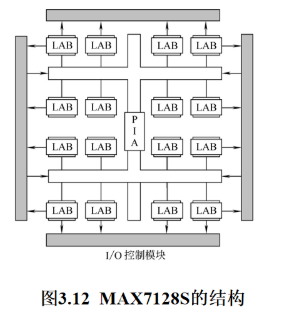
)
CPLD的基本结构是由一个二维的逻辑块阵列组成的，它是构成CPLD器件的逻辑组成核心，还有多个I/O块以及连接逻辑块的互连资源。


每组逻辑单元LE(Logic Element)连接到逻辑阵列块LAB(Logic Array Block)，LAB被分成行和列，每行包含一个嵌入阵列块EAB。LAB和EAB由快速通道互相连接。I/O单元IOE(Input/Output Elements)位于行通道和列通道两端。
嵌入阵列由一系列嵌入阵列块EAB构成。实现存储功能时，每个EAB提供2048比特，可以用来完成RAM、ROM、双口RAM或者FIFO功能。实现逻辑功能时，每个EAB可以提供100~600门以实现复杂的逻辑功能，如实现乘法器、微控制器、状态机和DSP(数字信号处理)功能。EAB可以单独使用或多个EAB联合使用以实现更强的功能。
逻辑阵列由逻辑阵列块LAB构成。每个LAB包含8个逻辑单元和一个局部连接。一个逻辑单元有一个4输入查找表、一个可编程触发器和一个实现进位和级联功能的专用信号路径。
LAB按照行、列排序，构成逻辑阵列，每个LAB由8个LE构成，为行列两端的输入输出单元IOE提供I/O端口。每个IOE包含一个双向I/O缓冲器和一个可以用作输入输出寄存的触发器，

XC3164 PC 84-4 C 的含义如下：
-
第1项：XC3164表示器件型号。
-
第2项：PC表示器件的封装形式，主要有PLCC(Plastic Leaded Chip Carrier，塑料方形扁平封装)、PQFP(Plastic Quad Flat Pack，塑料四方扁平封装)、TQFP(Thin Quad Flat Pack，四方薄扁形封装)、RQFP(Power Quad Flat Pack,大功率四方扁平封装)、BGA(Bal Grid Array(Package)，球形网状阵列(封装))、PGA(Ceramic Pin Grid Array(Package)，陶瓷网状直插阵列(封装)等形式。
-
第3项：84表示封装引脚数。一般有44、68、84、100、144、160、208、240等数种，常用的器件封装引脚数有44、68、84、100、144、160等，最大的达596个引脚。而最大用户I/O是指相应器件中用户可利用的最大输入/输出引脚数目，它与器件的封装引脚不一定相同。
-
第4项：- 4表示速度等级。速度等级有两种表示方法。在较早的产品中，用触发器的反转速率来表示，单位为MHz，一般分为-50、-70、-100、-125和-150；在较后的产品中用一个CLB的延时来表示，单位为ns，一般可分为-10、-8、- 6、-5、- 4、-3、-2、- 09。
-
第5项： C表示环境温度范围。其中又有C——商用级(0℃～85℃)、I——工业级(- 40℃～100℃)和M——军用级(-55℃～125℃)。
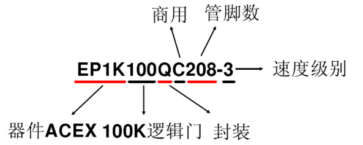
)
选择题
0.若一个进程内同一个信号的赋值语句（⇐）有多条，则前几条不做操作，最后一条才装载
1.一个项目的输入输出是定义在（）
a.实体中 b.结构体中 c.任何位置 d.进程中
2.描述项目具有逻辑功能的是（）
a.实体 B.结构体 C.配置 D.进程
3.关键字ARCHITECTURE定义的是（）
A.结构体 B.进程 C,实体 D.配置
4.MAXPLUSII中编译VHDL源程序时要求（）
A.文件名和实体不可同名
B.文件名和实体名无关
C.文件名和实体名要相同
D.不确定
5.1987标准的VHDL语言对大小写是
A.敏感的 B.只能用小写 C.只能用大写 D.不敏感
6.关于1987标准的VHDL语言中，标识符描述正确的是（）
A.必须是以英文字母开头
B.可以使用汉字开头
C.可以使用数字开头
D.任何字符都可以
7.关于1987标准的VHDL语言中，标识符描述正确的是（）
A.下划线可以连用
B.下划线不能连用
C.不能使用下划线
D.可以使用任何字符
8.符合1987VHDL标准的标识符是（）
A.A_2 B.A+2 C.2A D.22
9.符合1987VHDL标准的标识符是
A.a_2_3 B.a___2 C.2_2_a D.2a
10.不符合1987VHDL标准的标识符是
A.a_1_in B. a_in_2 C.2_a D. asd_1
11.不符合1987VHDL标准的标识符是
A.a2b2 B.a1b1 C.ad12 D.%50
12.VHDL语言中变量中定义的位置是
A.实体中任何位置 B.实体中特定位置 C.结构体中任意位置 D.结构体中特定位置
13.VHDL语言中信号定义的位置是
A.实体中任何位置 B.实体中特定位置 C.结构体中任意位置 D.结构体中特定位置
14.变量是局部量，可以写在
A.实体中 B.进程中 C.线粒体中 D. 种子体中
15.变量和信号的描述正确的是
A.变量赋值号是：= B.信号赋值号是：= C.变量赋值号码是⇐ D. 二者没有区别
16.变量和信号描述正确的是
A.变量可以带出进程 B.信号可以带出进程 C.信号不可以带出进程 D.二者没有区别
- 关于VHDL类型，正确得是
A.数据类型不同不能进行运算
B.数据类型相同才能进行运算
C.数据类型相同或者相符就可以进行计算
D.运算与数据类型无关
18.下面数据中属于实数的是
A. 4.2 B. 3 C. ‘1’ D. “11011”
19.下面数据中属于位矢量的是
A. 4.2 B. 3 C. ‘1’ D. “11011”
20.关于VHDL数据类型，正确的是
A.用户不能定义子类型 B.用户可以定义子类型
C.用户可以定义任意类型的数据 D.前面三个答案都是错误的
- 可以不必声明而直接引用的数据类型是
A.STD_LOGIC B.STD_LOGIC_VECTOR C.BIT D.前面三个答案都是错误的
- STD_LOGIC_1164中定义的高阻是
A.X B. x C. z D.Z
23.STD_LOGIC_1164中字符H定义的是
A.弱信号1 B.弱信号0 C.没有这个定义 D. 初始值
1-5：ABACD 6-10：ABAAC 11-15:DDDBA
学习基本结构
VHDL的基本设计单元结构：程序包说明、实体说明、结构体说明三部分。
-- 库、程序包的说明调用
Library IEEE;
use IEEE.Std_Logic_1164.ALL;
-- 实体声明
Entity FreDevider is
port
(
Clock: IN Std_logic;
Clkout: OUT Std_logic
);
END;
-- 结构体定义
Architecture Behavior Of FreDevider is
signal Clk:Std_Logic; -- 中间临时变量
begin
process(Clock)--进程
begin
IF rising_edge(Clock) THEN
Clk <= NOT Clk;
END IF;
END process;
Clkout <= Clk;
END库
常用的库有IEEE库、STD库和WORK库:
- IEEE库：是VHDL设计中最常用的资源库，包含IEEE标准的STD_LOGIC_1164、NUMERIC_BIT、NUMERIC_STD以及其他一些支持工业标准的程序包。其中最重要和最常用的是STD_LOGIC_1164程序包，大部分程序都是以此程序包中设定的标准为设计基础。
- STD库：是VHDL的标准库，VHDL在编译过程中会自动调用这个库，所以使用时不需要用语句另外说明。
- WORK库：是用户在进行VHDL设计时的现行工作库，用户的设计成果将自动保存在这个库中，是用户自己的仓库，同STD库一样，使用该库不需要任何说明。
库的作用范围：
库说明语句的作用范围从一个实体说明开始到它所属的构造体、配置为止。当一个源程序中出现两个以上的实体时，两条作为使用库的说明语句应在每个实体说明语句前重复书写。
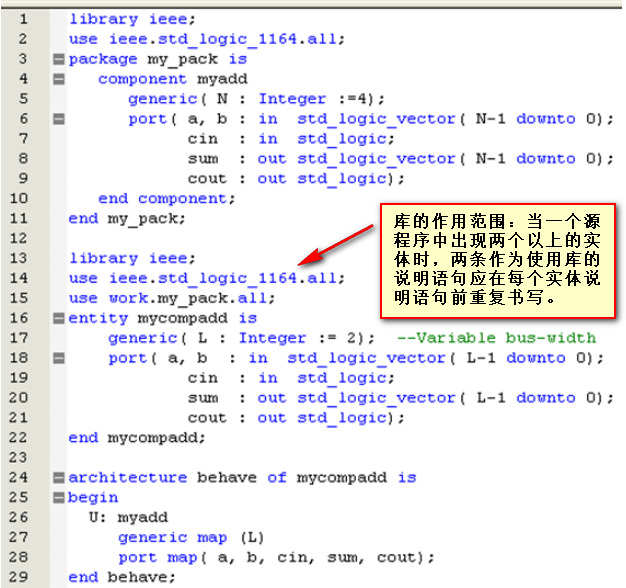
)
程序包
--包头
PACKAGE CHENGXUBAOMING IS
--程序包头说明语句
END CHENGXUBAOMING;
--包体
PACKAGE BODY CHENGXUBAOMING IS
--程序包体说明语句
END CHENGXUBAOMING; --调用程序包通用格式
USE 库名.程序包名.ALL;常用预定义程序包有以下四个：
-
1.STD_LOGIC_1164程序包 STD_LOGIC_1164程序包定义了一些数据类型、子类型和函数。数据类型包括：STD_ULOGIC、STD_ULOGIC _VECTOR、STD_LOGIC和STD_LOGIC _VECTOR，用的最多最广的是STD_LOGIC和STD_LOGIC_VECTOR数据类型。调用STD_LOGIC_1164程序包中的项目需要使用以下语句： LIBRARY IEEE; USE IEEE.STD_LOGIC_1164.ALL; 该程序包预先在IEEE库中编译，是IEEE库中最常用的标准程序包，其数据类型能够满足工业标准，非常适合CPLD（或FPGA）器件的多值逻辑设计结构。
-
2.STD_LOGIC_ARITH程序包 该程序包是美国Synopsys公司的程序包，预先编译在IEEE库中。主要是在STD_LOGIC_1164程序包的基础上扩展了UNSIGNED（无符号）、SIGNED（符号）和SMALL_INT（短整型）三个数据类型，并定义了相关的算术运算符和转换函数。
-
3.STD_LOGIC_SIGNED程序包 该程序包预先编译在IEEE库中，也是Synopsys公司的程序包。主要定义有符号数的运算，重载后可用于INTEGER（整数）、STD_LOGIC（标准逻辑位）和STD_LOGIC _VECTOR（标准逻辑位向量）之间的混合运算，并且定义了STD_LOGIC _VECTOR到INTEGER的转换函数。还定义了STD_LOGIC _VECTOR类型的符号数算数运算子程序。
-
4.STD_LOGIC_UNSIGNED程序包 该程序包用来定义无符号数的运算，其他功能与STD_LOGIC_SIGNED相似。
实体
ENTITY 实体名 IS -- 引导语句
[GENERIC (常数名: 数据类型: 设定值)] -- 类属表
PORT -- 端口表
(
端口名1: 端口方向 端口类型;
端口名2: 端口方向 端口类型;
端口名3: 端口方向 端口类型;
......
端口名n: 端口方向 端口类型 -- 最后一个一定不能加";"，不然会报next process的")" expect ";" or ","
);
END [实体名]; -- 结束语句
--port中端口默认类型为signal实体中—类属
GENERIC (常数名:数据类型:设定值); --类似于C中的宏定义
--放在实体或者块结构体前面的说明部分
--举例
ENTITY mcu1 IS
GENERIC (addrwidth : INTEGER := 16);
PORT(
add_bus : OUT STD_LOGIC_VECTOR(addrwidth-1 DOWNTO 0) );
...实体中—端口
PORT(端口信号名:端口模式 数据类型;
端口信号名:端口模式 数据类型）;- 端口模式有:
- IN : 在实体中只读，接受外来数据. 只能出现在赋值语句的右侧。
- OUT: 在实体中只能更新，不可读。只能出现在赋值语句的左侧。
- INOUT: 在实体内部可更新、可读，可出现在赋值语句的两侧。
- BUFFER: 可用作内部赋值，可出现在赋值语句的两侧。在可综合代码中不推荐使用。
结构体（并发）
- 用于描述模型的功能
- 必须和一个 Entity相关联
- 一个Entity可有多个 Architectures
- Architecture 语句并发执行.
Architecture 结构体名 OF 实体名 IS
定义语句法;
BEGIN
功能描述语句法;
END 结构体名称;- 结构描述（接近原理图）
- 数据流描述（并发代码）
- 行为描述（顺序、并发）
结构  数据流
数据流 
行为 
--两位相等比较器
entity equ2 is
port(a,b:in std_logic_vector(1 downto 0);
equ:out std_logic);
end equ2;
--结构体结构描述：用元件例化，即网表形式来实现；
architecture netlist of equ2 is
-- nor 或非component nor2
port(a,b :in std_logic;
c :out std_logic);
end component;
component xor2-- xor 异或
port(a,b :in std_logic;
c :out std_logic);
end component;
signal x: std_logic_vector(1 downto 0);
begin
U1:xor2 port map(a(0),b(0),x(0));
U2:xor2 port map(a(1),b(1),x(1));
U3:nor2 port map(x(0),x(1),equ);
end netlist;
--结构体数据流描述：用布尔方程来实现：
architecture equation of equ2 is
begin
equ<=(a(0) xor b(0)) nor(a(1) xor b(1));
end equation;
--结构体行为描述：用顺序语句来实现：
architecture con_behave of equ2 is
begin
process(a,b)
begin
if a=b then
equ<='1';
else
equ<='0';
end if;
end procerss;
end con_behave;
--结构体行为描述：用并行语句来实现：
architecture seq_behave of equ2 is
begin
equ<='1' when a=b else '0';
end sqq_behave;
块语句
块结构名: BLOCK
端口说明 类属说明
BEGIN
并行语句
END BLOCK 块结构名;进程语句
进程名: PROCESS(敏感信号表) IS
进程说明
BEGIN
顺序描述语句
END PROCESS 进程名; --进程名字可省略
配置Configuration
- 用于实现模型的关联，可将一个 Entity 和一个Architecture关联起来，也可将一个 component 和一个 entity-architecture关联起来。
- 目的是为了在一个实体中灵活的使用不同的Architecture。可以在仿真环境中大量使用，但是在综合环境中限制使用。
Configuration 配置名 of 实体名 IS
for 结构体名
end for;
end Configuration;

子程序
能被主程序反复调用并能将处理结果传送到主程序的程序模块，子程序分为过程语句（Procedure）和函数（Functure）两种。子程序中的参数说明是局部的，只能在子程序体内起作用。
子程序—过程Procedure
PROCEDURE 过程名（参数1;参数2;——） IS
定义语句;
BEGIN
顺序处理语句;
END 过程名;
子程序—函数Function
FUNCTION 函数名（参数1;参数2;——）
RETURN 数据类型 IS
定义语句;
BEGIN
顺序处理语句;
RETURN 返回变量名;
学习基本语法
标识符
标识符用来定义常数、变量、信号、端口、子程序或者参数的名字
- 首字符必须是字母
- 末字符不能为下划线
- 不允许出现两个连续的下划线
- 不区分大小写
- VHDL定义的保留字（关键字），不能用作标识符
- 标识符字符最长可以是32个字符
- 注释由两个连续的下划线（—）引导
关键字（不能作为标识符）

数据对象
- 信号SIGNAL
- 变量VARIABLE
- 常量CONSTAT
--举例信号
SIGNAL brdy: BIT;
SIGNAL output : INTEGER:=2;
目标信号名<=表达式
--为全局变量，在程序包说明、实体说明、结构体描述中使用，用于声明内部信号，而非外部信号（外部信号为IN、OUT、INOUT、BUFFER），其在元件之间起互联作用，可以赋值给外部信号。
--举例变量
VARIABLE opcode:BIT_VECTOR(3 downto 0):= "0000";
VARIABLE freq: INNTEGER;
变量赋值符号":="，变量赋值立刻更新。
--只在给定的进程（process）中用于声明局部值或用于子程序中，变量的赋值符号为“:=”，和信号不同，信号是实际的，是内部的一个存储元件（SIGNAL）或者是外部输入（IN、OUT、INOUT、BUFFER），而变量是虚的，仅是为了书写方便而引入的一个名称，常用在实现某种算法的赋值语句当中。
--常量举例
CONSTANT rise_fall_time: TIME:=2ns;
CONSTANT data_bus: INTEGER:=16;
--在结构体描述、程序包说明、实体说明、过程说明、函数调用说明和进程说明中使用，在设计中描述某一规定类型的特定值不变，如利用它可设计不同模值的计数器，模值存于一常量中，对不同的设计，改变模值仅需改变此常量即可，就如参数化元件。
数据类型
VHDL常用的数据类型有三种：
- 标准定义的数据类型
- IEEE预定义标准逻辑位
- 矢量及用户自定义的数据类型。
- 布尔（Boolean）： 取值为FALSE和TRUE，不是数值，不能运算，一般用于关系运算符
- 位（Bit）： 取值为0和1，用于逻辑运算
- 字符（character）： 通常用”引号引起来，区分大小写
- 字符串（String）： 通常用""双引号引起来，区分大小写
- 整数（Integer）：
- 实数（real）： 实数类型仅能在VHDL仿真器中使用，综合器不支持
- 时间（Time） ： 物理量数据，包括整数和单位两个部分 表达方法包含数字、（空格）单位两部分，如（10 PS) 常用单位：fs,ps,ns,us,ms,sec,min,hr
- 错误等级（severity level）： 表示系统状态
Type BOOLEAN IS (FALSE,TRUE);
TYPE BIT IS('0','1');
TYPE BIT_VECTOR IS ARRAY(Natural range<>)OF BIT;
SIGNAL a:BIT_VECTOR(0 TO 7);
TYPE CHARACTER IS (NUL,SOH,STX,'','!');
VARIABLE string_var:STING(1 TO 7);
string_var:="abcd";
VARIABLE a:INTEGER -63 to 63
(1)整数(INTEGER) 范围：-2147483547~+2147483646，即可用 32位有符号的二进制数表示。如2、10E4、16#D2#。
例：INTEGER RANGE 100 DOWNTO 0
(2)实数(REAL) 范围：-1.0E38~1.0E38，书写时一定要有小数。 如： 65.36、 8#43.6#E+4。
(3) 位(BIT) 取值只能是用带单引号的‘1’和‘0’来表示。
(4)位矢量(BIT_VECTOR)位矢量是用双引号括起来的一组位数据，如“010101”。例：SIGNAL A2：BIT_ VECTOR (3 DOWNTO 0)；
(5)布尔量(BOOLEAN) 只有“真”和“假”2个状态，可以进行关系运算。
(6)字符(CHARACTER)：字符通常用单引号括起来，对大小写敏感。
(7)字符串(STRING)：字符串是双引号括起来的一串字符，如“laksdklakld”。
(8)时间(TIME)：完整的时间类型包括整数和物理量单位两部分，整数和单位之间至少留一个空格，如55 ms，20 ns。
(9)自然数(NATURAL)和正整数(POSITIVE)数据类型
自然数是整数的一个子类型，非负的整数，即零和正整数。
正整数也是整数的一个子类型，它包括整数中非零和非负的数值。
(10)错误等级(SEVERITY LEVEL)
在 VHDL 仿真器中， 错误等级用来指示设计系统的 工作状态，共有四种可能的状态值，
即 NOTE(注意)、WARNING(警告)、ERROR(出错)、FAILURE(失败)。
(11)综合器不支持的数据类型
物理类型。综合器不支持物理类型的数据，如具有量纲型的数据，包括时间类型，这些类型只能用于仿真过程。
浮点型。如 REAL 型。
Aceess型。综合器不支持存取型结构，因为不存在这样对应的硬件结构。
File 型。综合器不支持磁盘文件型，硬件对应的文件仅为 RAM 和 ROM。
（12）其他预定义数据类型
VHDL 综合工具配带的扩展程序包中，定义了一些有用的类型，如 Synopsys 公司在IEEE 库中加入的程序包 STD_LOGIC_ARITH 中定义了如下的数据类型：无符号型(UNSIGNED)、 有符号型(SIGNED)和小整型(SMALL_INT)。
标准逻辑位（STD_LOGIC）数据类型
TYPE STD_LOGIC IS (‘U’，‘X’，‘0’，‘1’，‘Z’，‘W’，‘L’，‘H’，‘-’)；
各值的含义是：
‘U’--未初始化的，
‘X’--强未知的，
'0'--强0，'1'--强1，
'Z'--高阻态，
'W'--弱未知的，
'L'--弱0，'H'--弱1，
'-'--忽略。
在程序中使用此数据类型前，需加入下面的语句：
LIBRARY IEEE；
USE IEEE.STD_LOGIC_1164.ALL；
标准逻辑矢量（STD_LOGIC_VECTOR）数据类型
STD_LOGIC_VECTOR类型定义如下：
TYPE STD_LOGIC_VECTOR IS ARRAY (NATURAL RANGE<>) OF STD_LOGIC；
显然，STD_LOGIC_VECTOR是定义在STD_LOGIC_1164程序包中的标准一维数组，数组中的每一个元素的数据类型都是以上定义的标准逻辑位STD_LOGIC。
用户自定义数据类型
VHDL允许用户自行定义新的数据类型，如枚举类型(ENUMERATION TYPE)、整数类型(INTEGER TYPE)、数组类型(ARRAY TYPE)、记录类型(RECORD TYPE)、时间类型(TIME TYPE)、实数类型(REAL TYPE)等。用户自定义数据类型是用类型定义语句TYPE和子类型定义语句SUBTYPE实现的。
用户自定义数据类型的一般格式：
TYPE 数据类型名 IS 数据类型定义 [OF 基本数据类型]；
TYPE digit IS INTEGER RANGE 0 TO 9；
TYPE current IS REAL RANGE -1E4 TO 1E4；
TYPE word IS ARRAY (INTEGER 1 TO 8) OF STD_LOGIC；
(关键词OF后的基本数据类型是指数据类型定义中所定义的元素的基本数据类型，一般都是取已有的预定义数据类型，如BIT、STD_LOGIC或INTEGER等。)
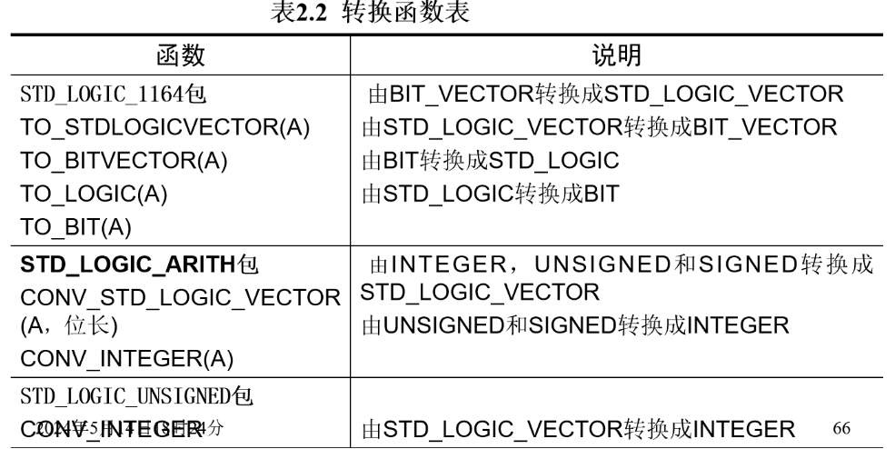
)（TO是BIT和STD_LOGIC之间的转化）
（CONV是STD_LOGIC、SIGNED、INTEGER之间的转化）
运算符
算术运算符
- +，-，*，/
- MOD取模
- REM取余
- SLL 逻辑左移
- SRL 逻辑右移
- SLA 算数左移
- SRA 算数右移
- ROL 循环左移
- ROR 循环右移
- ** 乘方
- ABS() :绝对值
关系运算符
-
=
-
/=
-
<
-
-
⇐
-
. >=
逻辑运算符
- AND
- OR
- NAND
- NOR
- NOT
- XNOR
- XOR
赋值运算符
- ⇐ 信号赋值（最后赋值）
- ：= 逻辑赋值（即时赋值）
关联运算符
- ⇒
其他运算符
-
-
- & 并置运算符


运算符优先级
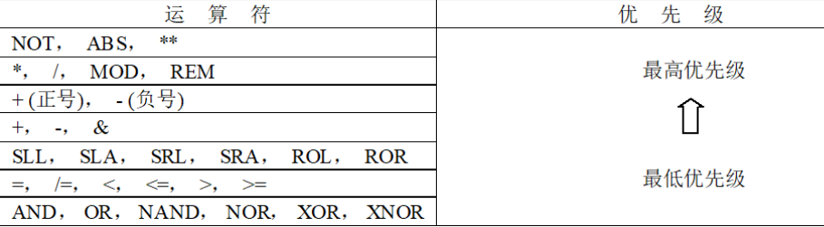
)VHDL基本语句
并行语句
- 每一并行语句内部的语句运行方式可以有两种不同的方式，即并行执行方式(如块语句)和顺序执行方式(如进程语句)。因此，VHDL并行语句勾画出了一幅充分表达硬件电路的真实的运行图景。
ARCHITECTURE NAME OF NAME2 IS
说明语句;
BEGIN
并行语句;
END ARCHITECTURE NAME;
- 并行信号赋值语句(CONCURRENT SIGNAL ASSIGNMENTS)
- 条件/选择信号赋值语句(CONDITIONAL/SELECTED SIGNAL ASSIGNMENTS)
- 进程语句(PROCESS STATEMENTS)
- 块语句(BLOCK STATEMENTS)
- 元件例化语句(COMPONENT INSTANTIATIONS)
- 生成语句(GENERATE STATEMENTS)
- 并行过程调用语句(CONCURRENT PROCEDURE CALLS)
并行信号赋值语句
<signal_name> <= <expression>;
Example：
q <= input1 or input2;
q <= input1 and input2;
-- 最终执行 q <= input1 and input2;
条件信号赋值语句
SIGNAL_NAME <= <SIGNAL/VALUE> WHEN <CONDITION1> else
<SIGNAL/VALUE> WHEN <CONDITION2> else
<SIGNAL/VALUE> WHEN <CONDITION3> else
<SIGNAL/VALUE> WHEN <CONDITION4> else
<SIGNAL/VALUE> WHEN <CONDITION5> else
……
<SIGNAL/VALUE> WHEN <CONDITIONN> else
<SIGNAL/VALUE> ;
选择信号赋值语句
WITH <EXPRESSION> SELECT
<SIGNAL_NAME> <= <SIGNAL/VALUE> WHEN <CONDITION1>,
<SIGNAL/VALUE> WHEN <CONDITION2>,
<SIGNAL/VALUE> WHEN OTHERS;
进程语句
从本质上讲VHDL的所有语句都是并行语句。进程（process）语句是用来给并行的硬件提供顺序语句，一个结构体可以包含多个进程，多个进程之间并行运行。进程内部的语句顺序执行。
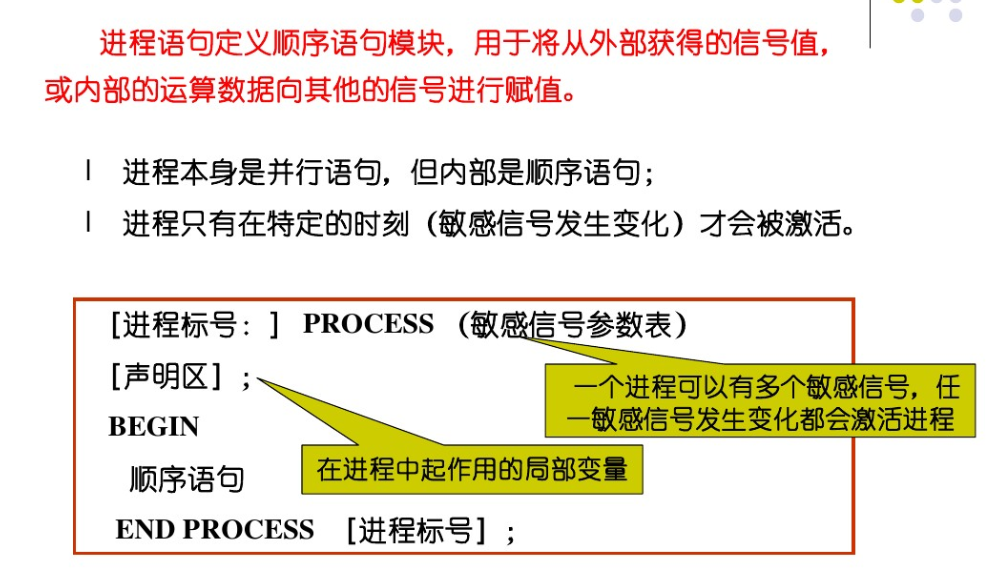
)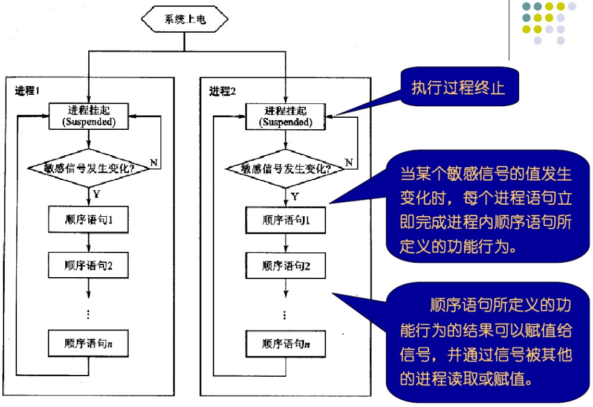
)--上升沿描述
Clock'EVENT AND Clock='1'
--下降沿描述
Clock'EVENT AND Clock='0'
--上升沿描述
rising_edge(Clock)
--下降沿描述
falling_edge(Clock)
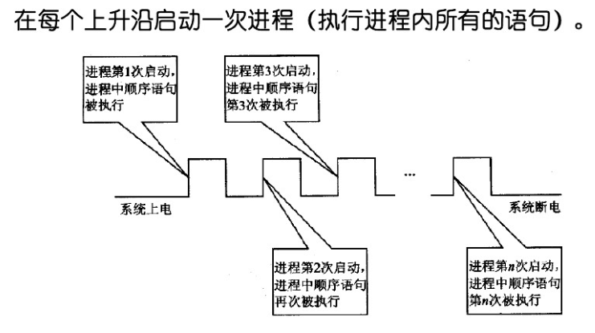
)敏感表和wait语句
- 敏感表和WAIT语句等效，但是WAIT语句更多样化
- 一个进程不可既有敏感表又有WAIT语句，但是要有一种
- 逻辑综合对WAIT有严格的限制（只有WAIT UNTILL语句可以综合）
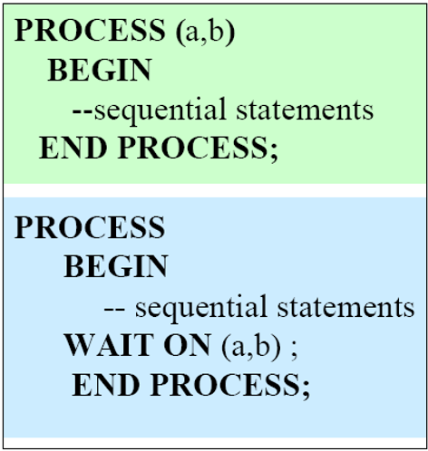
)WAIT UNTIL CONDITION;
--举例说明
architecture arc2 of process_wait is
begin
process
begin
wait until clk'event and clk = '1';
q<=d;
end process;
end architecture;
WAIT ON SENSITIVITY LIST;
WAIT ON (A,B,C);--敏感表，任意一个发生变化才会执行
- 进程内部，对同一信号多次赋值，只最后一次起作用，即最靠近end process；的
process(a,b,s)
begin
--final results: s<=a+b y<=a+b+1
y<=s+1;
s<=a;
s<=a+b;
end process;
- 进程内部，对同一变量多次赋值，立即执行。
process(a,b)
variable ss: std_logic_vector(3 downto 0);
begin
ss:=a;
y<=ss+1;
ss:=a+b;
end process;
--结果：由于y<=ss+1写在ss:=a之后，所以将a+1的值赋给y
块语句
块(BLOCK)语句是一种将结构体中的并行描述语句进行组合的方法，它的主要目的是改善并行语句及其结构的可读性，或是利用BLOCK的保护表达式关闭某些信号。
块标号:BLOCK [(块保护表达式)] [IS]
接口说明;
类属说明;
BEGIN
并行语句;
END BLOCK [块标号];
元件例化语句
-
元件例化就是将预先设计号的设计实体定义为一个元件，然后利用特定的语句将此元件与当前的设计实体中的指定端口相连接，从而为当前设计实体引入一个新的低一级的设计层次
-
元件例化语句由两部分组成前一部分是将一个现成的设计实体定义为一个元件的语句，第二部分则是此元件与当前设计实体中的连接说明。
-
COMPONENT 元件名 IS [GENERIC(类属表)说明;] [PORT(端口名表)说明;] END COMPONENT 元件名;
生成语句
- 生成语句作用：复制
- 根据某些条件设置好某一原件或设计单位，可以用生成语句复制一组完全相同的并行元件或设计单元电路
[标号:] FOR 循环变量 IN 取值范围 GENERATE
[说明部分]
并行语句;
END GENERATE [标号];
--取值范围： 表达式 to 表达式 或者 表达式 downto 表达式
并行过程调用语句
- 并行过程调用语句作为并行语句直接出现在结构体中0
- 调用语句可以为：过程（Procedure）或者函数（Function）
- 调用的语法格式：过程名/函数名（关联参数表）
- 函数和过程统称子函数子程序
过程
-
- 参数可以是 in, out, inout 模式
-
输入参数（in）的默认数据类型是constant
-
输出参数（out）或者inout参数默认数据类型variable
-
参数对象可为 constant, variable and signal
-
过程调用参数需要一一对应，形参为constant， 实参可以为signal、constant或variable；形参若 为signal或variable，则实参需对应一致的类型
-
- 参数可以是 in, out, inout 模式
-
- 其特征是过程中可以修改参数值（out,inout模式 参数）
- 不需要RETURN语句
PROCEDURE NAME IS
[声明部分]
BEGIN
顺序语句;
END PROCEDURE NAME;
函数 —函数一般定义在包中（声明及实现）
- 产生一个返回值。
- 参数只能为in模式。
- 传递的参数在函数内部只能使用不能修改（因为参数为in）。
- 允许的参数数据类型为 constant或signal，默认constant。
- 形参和实参必须匹配。形参为constant，则实参可以是variable、signal、 constant或表达式；形参为signal，实参要为 signal。
- 需要一个RETURN 语句 。
FUNCTION NAME
RETURN data_type IS
[声明部分];
BEGIN
顺序语句;
RETURN 声明名；
END FUNCTION NAME;
--函数一般定义在包中（声明及实现）
过程与函数的区别：
- 函数参数只能使用IN。过程中参数为IN、 INOUT、OUT三种。
- 函数只有一个返回值。过程可以通过参数返回 多个返回值。
顺序语句
- 顺序信号/变量赋值语句
- IF-THEN语句
- CASE语句
- LOOP语句
- RETURN语句
- NULL语句
顺序信号/变量赋值语句
进程中的顺序信号赋值语句
signal<=expression;
END PROCESS时更新
多次赋值，以最后一次赋值为准
进程中的顺序变量赋值语句
variable:=expression;
立刻更新
多次赋值，以最后一次赋值为准
IF-THEN语句
IF A='1' THEN
B<=1;
ELSEIF A='2' THEN
B<=2;
……
ELSE
B<=255;
END IF;
--顺序从上到下，有优先级
--可以嵌套
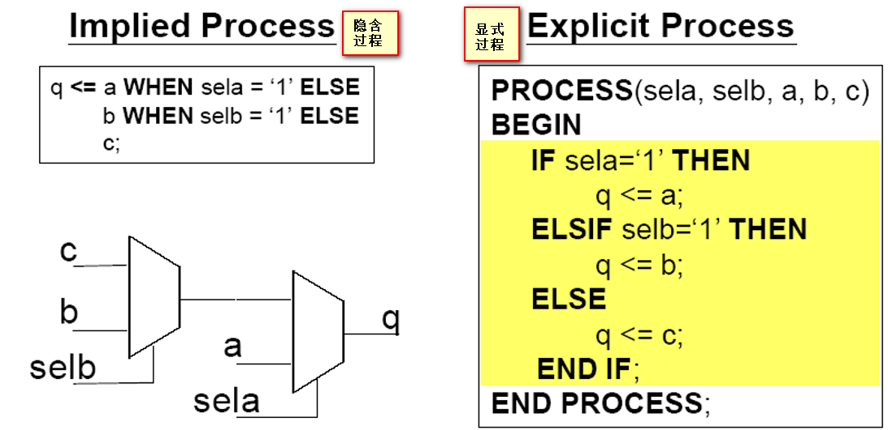
)CASE语句
CASE A IS
WHEN '1'=> B<=1;
WHEN '2'=> B<=2;
……
WHEN OTHERS=> B<=255;
END CASE;
- 条件只杯评估一次
- 没有优先级必须包括所有的条件（可以没有WHEN OTHERS,但是必须包括所有条件）
- WHEN OTHERS语句包括了没有指定的所有条件
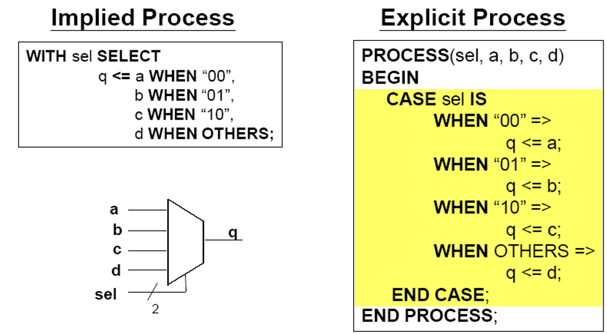
)LOOP语句
1.无限LOOP，LOOP将会无限执行，除非EXIT语句存在
NAME LOOP
---
EXIT NAME;
END LOOP;
2.WHILE LOOP。条件满足则循环
WHILE CONDITION LOOP
----
END LOOP;
3.FOR LOOP.迭代LOOP
FOR <IDENTIFIER> IN <RANGE> LOOP
-----
END LOOP;
示例
--四位左移
LIBRARY IEEE;
USE IEEE.STD_LOGIC_1164.ALL;
ENTITY SHIFT4 IS
PORT(
SHFT_LFT:IN STD_LOGIC;--允许位
D_IN: IN STD_LOGIC_VECTOR(3 DOWNTO 0);--输入4位
Q_OUT: OUT STD_LOGIC_VECTOR(7 DOWNTO 0)--输出8位
);
END SHIFT4;
ARCHITECTURE LOGIC OF SHIFT4 IS
BEGIN
PROCESS(D_IN,SHFT_LFT)
VARIABLE SHFT_VAR:STD_LOGIC_VECTOR(7 DOWNTO 0);--进程说明语句部分定义变量
BEGIN
SHFT_VAR(7 DOWNTO 4):="0000";--变量上4位为0
SHFT_VAR(3 DOWNTO 0):=D_IN; --变量下4位为输入
IF SHFT_LFT='1'THEN--如果允许
FOR I IN 7 DOWNTO 4 LOOP--下4位被搬移到上4位
SHFT_VAR(I):=SHFT_VAR(I-4);
END LOOP;
SHFT_VAR(3 DOWNTO 0):="0000";--下4位归0
ELSE
SHFT_VAR:=SHFT_VAR;--如果不被允许，不搬移，输入在下4位
END IF;
Q_OUT<=SHFT_VAR;--变量被搬移到输出
END PROCESS;
END LOGIC;
RETURN语句
RETURN语句是一段子程序结束后，返回主程序的语句
RETURN;--只能用于过程，它后面不要有表达式
RETURN 表达式;--只用于函数，它后面必须有表达式，函数结束必须用RETURN语句
示例
--过程
PROCEDURE RE(SIGNAL S,R:IN STD_LOGIC
SIGNAL Q:INOUT STD_LOGIC) IS
BEGIN
IF(S='1'andr='1')THEN
REPORT"FORBIDDEN STATE:S AND R ARE QUUAL TO '1'";
RETURN;
ELSE
Q <= S AND R AFTER 5NS;
END IF;
END PROCEDURE RS;
--函数
FUNCTION OPT(A,B,OPR:STD_LOGIC) RETURN STD_LOGIC IS
BEGIN
IF(OPR='1')THEN RETURN (A AND B);
ELSE RETURN (A OR B);
END IF;
END FUNCTION OPT;
NULL语句
空操作
NULL;
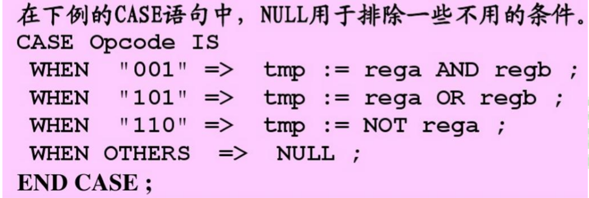
)代码
二输入与非门
LIBRARY IEEE;
USE IEEE.STD_LOGIC_1164.ALL;
ENTITY demo4 IS
PORT (a,b: IN STD_LOGIC;
y: OUT STD_LOGIC);
END demo4;
ARCHITECTURE NAND2PP OF demo4 IS
BEGIN
y<= a NAND b;
END NAND2PP;
二输入或非门
LIBRARY IEEE;
USE IEEE.STD_LOGIC_1164.ALL;
ENTITY demo5 IS
PORT(a,b: IN STD_LOGIC;
y: OUT STD_LOGIC);
END demo5;
ARCHITECTURE HUOFEIMEN OF demo5 IS
BEGIN
y <= a NOR b;
END HUOFEIMEN;
各个门
--同时实现一个与门、或门、与非门、或非门、异或门及反相器的逻辑
LIBRARY IEEE;
USE IEEE.STD_LOGIC_1164.ALL;
ENTITY demo6 IS
PORT(
a,b: IN STD_LOGIC;
YAND,YOR,YNAND,YNOR,YXOR,YN: OUT STD_LOGIC
);
END demo6;
ARCHITECTURE LUAN OF demo6 IS
BEGIN
YAND <= a AND b;
YNAND <= a NAND b;
YOR <= a OR b;
YNOR <= a NOR b;
YXOR <= a XOR b;
YN <= NOT a;
END LUAN;
3-8译码器
LIBRARY IEEE;
USE IEEE.STD_LOGIC_1164.ALL;
ENTITY demo7 IS
PORT
(
A,B,C: IN STD_LOGIC;
Y : OUT STD_LOGIC_VECTOR(7 DOWNTO 0)
);
END demo7;
ARCHITECTURE KEWU OF demo7 IS
SIGNAL ABC: STD_LOGIC_VECTOR(2 DOWNTO 0);
BEGIN
ABC <= A&B&C;
PROCESS(ABC)
BEGIN
CASE ABC IS
WHEN "000"=>Y<="11111110";
WHEN "001"=>Y<="11111101";
WHEN "010"=>Y<="11111011";
WHEN "011"=>Y<="11110111";
WHEN "100"=>Y<="11101111";
WHEN "101"=>Y<="11011111";
WHEN "110"=>Y<="10111111";
WHEN "111"=>Y<="01111111";
WHEN OTHERS=>Y<="XXXXXXXX";
END CASE;
END PROCESS;
END KEWU;
3-8译码器（类型转化解决式）
LIBRARY IEEE;
USE IEEE.STD_LOGIC_1164,ALL;
USE IEEE.STD_LOGIC_UNSIGNED,ALL;
ENTITY DECODER3TO8 IS
PORT(
INPUT: IN STD_LOGIC_VECTOR(2 DOWNTO 0);
OUTPUT: OUT STD_LOGIC_VECTOR(7 DOWNTO 0)
);
END DECODER3TO8;
ARCHITECTURE BEHAVE OF DECODER3TO8 IS
BEGIN
PROCESS(INPUT)
BEGIN
OUTPUT<=(OTHERS=>'0');
OUTPUT(CONV_INTEGER(INPUT))<='1';
END PROCESS;
END BEHAVE;
--在STD_LOGIC_UNSIGNED中，CONV_INTEGER()是把STD_LOGIC转换成INTEGER
--在STD_LOGIC_ARITH中， CONV_INTEGER()是把UNSIGNED,SIGNED转换成INTEGER
--例如，假设INPUT是010，直接转化成了INTEGER数字2
异步复位（清零）
PROCESS(CLK,RESET,A)
BEGIN
IF CLK'EVENT AND CLK='1' THEN
Q <=A+1;
ELSIF RESET='1' THEN
Q <='0';
END IF
END PROCESS;
同步复位（清零）
PROCESS(CJK,RESET,A)
BEGIN
IF CLK'EVENT AND CLK='1' THEN
IF RESET='1' THEN
Q <= '0';
ELSE
Q <=A+1;
END IF;
END IF;
END PROCESS;
使用异步RESET的8BIT寄存器
LIBRARY IEEE;
USE IEEE.STD_LOGIC_1164.ALL;
ENTITY REG8 IS
PORT(
D: IN STD_LOGIC_VECTOR(7 DOWNTO 0);
RESETN,CLOCK: IN STD_LOGIC;
Q:OUT STD_LOGIC_VECTOR(7 DOWNTO 0)
);
END REG8;
ARCHITECTURE BEHAVIORAL OF REG8 IS
BEGIN
PROCESS(RESETN,CLOCK)
BEGIN
IF(RESETN='0') THEN
Q <="00000000";
ELSIF (CLOCK'EVENT AND CLOCK='1') THEN
Q <= D;
END IF;
END PROCESS;
END BEHAVIORAL;
使用异步清零的NBIT寄存器
LIBRARY IEEE;
USE IEEE.STD_LOGIC_1164.ALL;
ENTITY REGN IS
GENERIC (N:INTEGER:=16);
PORT(
D: IN STD_LOGIC_VECTOR(N-1 DOWNTO 0);
RESET,CLOCK: IN STD_LOGIC;
Q: OUT STD_LOGIC_VECTOR(N-1 DOWNTO 0);
);
ARCHITECTURE BEHAVIORAL OF REGN IS
BEGIN
PROCESS(RESET,CLOCK)
BEGIN
IF(RESET='0') THEN
Q <= (OTEHRS => '0'); --给Q的所有位赋0，方便用于多位信号的赋值操作
ELSIF (CLOCK'EVENT AND CLOCK='1') THEN
Q <= D;
END IF;
END PROCESS;
END BEHAVIORAL;
计数器
LIBRARY IEEE;
USE IEEE.STD_LOGIC_1164.ALL;
USE IEEE.STD_LOGIC_UNSGNED.ALL;
ENTITY COUNT_A IS
PORT(
CLK,RST.UPDN: IN STD_LOGIC;
Q: OUT STD_LOGIC_VECTOR(15 DOWNTO 0)
);
END COUNT_A;
ARCHITECTURE LOGIC OF COUNT_A IS
BEGIN
PROCESS(RESET,CLOCK)
VARIABLE TMP_Q:STD_LOGIC_VECTOR(15 DOWNTO 0);
BEGIN
IF(RST='0') THEN
Q<=(OTHERS=>'0');--异步复位
ELSIF(CLOCK'EVENT AND CLOCK='1')
IF UPDN='1'THEN
TMP_Q:=TMP_Q+1;
ELSE
TMP_Q=TMP_Q-1;
END IF;
Q<=TMP_Q;
END IF;
END PROCESS;
END LOGIC;
4BIT带进位全加器（行为描述）
LIBRARY IEEE;
USE IEEE.STD_LOGIC_1164.ALL;
ENTITY ADDER4_FULL IS
PORT(
A: IN STD_LOGIC_VECTOR(3 DOWNTO 0);
B: IN STD_LOGIC_VECTOR(3 DOWNTO 0);
CI: IN STD_LOGIC;
S: OUT STD_LOGIC_VECTOR(3 DOWNTO 0);
CO: OUT STD_LOGIC
);
END ADDER4_FULL;
ARCHITECTURE RTL OF ADDER4_FULL IS
BEGIN
PROCESS(A,B,CI)
VARIABLE A_T,B_T,C_T,S_T: STD_LOGIC_VECTOR(4 DOWNTO 0);
BEGIN
-- &拼接符
A_T :='0'&A;
B_T :='0'&B;
C_T :="0000"&CI;
S_T :=A_T+B_T+C_T;
CO<=S_T(4);
S <=S_T(3 DOWNTO 0);
END PROCESS;
END RTL;
四选一电路
-----------以下是错误代码-----------------
-----------以下是错误代码-----------------
-----------以下是错误代码-----------------
-----------以下是错误代码-----------------
LIBRARY IEEE;
USE IEEE.STD_LOGIC_1164.ALL;
ENTITY DEMO1 IS
PORT(
INPUT: IN STD_LOGIC_VECTOR(3 DOWNTO 0);
SW: IN STD_LOGIC_VECTOR(1 DOWNTO 0);
OUTPUT: OUT STD_LOGIC
);
END DEMO1;
ARCHITECTURE BEHAVE OF DEMO1 IS
BEGIN
PROCESS(INPUT,SW)------------------这句应当去掉
BEGIN
OUTPUT<=INPUT(3)WHEN SW="11" ELSE
INPUT(2)WHEN SW="10" ELSE
INPUT(1)WHEN SW="01" ELSE
INPUT(0)WHEN SW="00" ELSE
'0';
END PROCESS;-----------------------这句应当去掉
END BEHAVE;
-----------以上是错误代码-----------------
-----------以上是错误代码-----------------
-----------以上是错误代码-----------------
-----------以上是错误代码-----------------
--因为 在VHDL中，IF...THEN...ELSE是顺序语句，只能出现在行为描述中（进程体或者子程序中）；而WHEN...ELSE是并行语句，可以直接出现在结构体中，但却不能出现在行为描述中。WHEN...ELSE等效于一个进程体为IF...THEN...ELSE语句的进程。
四选一电路（CASE）
LIBRARY IEEE;
USE IEEE.STD_LOGIC_1164.ALL;
ENTITY DEMO1 IS
PORT(
INPUT: IN STD_LOGIC_VECTOR(3 DOWNTO 0);
SW: IN STD_LOGIC_VECTOR(1 DOWNTO 0);
OUTPUT: OUT STD_LOGIC
);
END DEMO1;
ARCHITECTURE BEHAVE OF DEMO1 IS
BEGIN
PROCESS(INPUT,SW)
BEGIN
CASE SW IS
WHEN "00" => OUTPUT<=INPUT(0);
WHEN "01" => OUTPUT<=INPUT(1);
WHEN "10" => OUTPUT<=INPUT(2);
WHEN "11" => OUTPUT<=INPUT(3);
WHEN OTHERS=>OUTPUT<='X';--x是强未知，这句话是必须的，因为STD_LOGIC的类型很多
END CASE;
END PROCESS;
END BEHAVE;
二选一电路（IF）
IF (P1='1') THEN----p1p2:"10""11"
Z<=A;
ELSIF (P2='1') THEN----p1p2:"01"
Z<=B;
ELSE----p1p2:"00"
Z<=C;
奇偶校验电路（LOOP）
LIBRARY IEEE;
USE IEEE.STD_LOGIC_1164.ALL;
ENTITY DEMO1 IF
PORT(
INPUT: IN STD_LOGIC_VECTOR(7 DOWNTO 0);
OUTPUT: OUT STD_LOGIC
);
END DEMO1;
ARCHITECTURE BEHAVE OF DEMO1 IS
VARIABLE X:STD_LOGIC;
BEGIN
PROCESS(INPUT)
BEGIN
X:='0';
FOR I IN 7 DOWNTO 0 LOOP
X:=X XOR INPUT(I);
END LOOP;
OUTPUT<=X;
END PROCESS;
END BEHAVE;
NEXT举例
LOOP1:FOR I IN 7 DOWNTO 0 LOOP
A(I)<='0';
NEXT WHEN(A=B);
A(I)<='1';
END LOOP1;
---成立则跳过此次循环剩下的语句，进行下次循环
4元素位矢量比较（EXIT）
LIBRARY IEEE;
USE IEEE.STD_LOGIC_1164.ALL;
ENTITY DEMO1 IS
PORT(
INPUT1: IN STD_LOGIC_VECTOR(3 DOWNTO 0);
INPUT2: IN STD_LOGIC_VECTOR(3 DOWNTO 0);
OUTPUT: OUT STD_LOGIC --0相等，1不相等
);
ARCHITECTURE BEHAVE OF DEMO1 IS
VARIABLE Y:STD_LOGIC;
BEGIN
PROCESS(INPUT1,INPUT2)
Y:='0';
BEGIN
FOR I IN 3 DOWNTO 0 LOOP
Y:='1';--假设不相等
EXIT WHEN(INPUT1(I)/=INPUT2(I));
Y:='0';--没有跳出，说明目前还是相等的
END LOOP;
OUTPUT<=Y;
END PROCESS;
END BEHAVE;
半加器造全加器
library ieee;
use ieee.std_logic_1164.all;
entity demo10 is
port (
A, B, Cin : in std_logic;
Sum, Cout : out std_logic
);
end entity demo10;
architecture Behavioral of demo10 is
component Half_Adder
port (
X, Y : in std_logic;
S, C : out std_logic
);
end component;
signal S1, S2, C1, C2 : std_logic;
begin
-- First Half Adder
Half1: Half_Adder port map(A, B, S1, C1);
-- Second Half Adder with Carry In from the first Half Adder
Half2: Half_Adder port map(S1, Cin, Sum, C2);
-- OR gate for Cout
Cout <= C1 or C2;
end architecture Behavioral;
-- Half Adder
library ieee;
use ieee.std_logic_1164.all;
entity Half_Adder is
port (
X, Y : in std_logic;
S, C : out std_logic
);
end entity Half_Adder;
architecture Behavioral of Half_Adder is
begin
S <= X xor Y; -- Sum
C <= X and Y; -- Carry
end architecture Behavioral;
--下面自己写的
LIBRARY IEEE;
USE IEEE.STD_LOGIC_1164.ALL;
ENTITY BAN IS
PORT(
A,B:IN STD_LOGIC;
S,Y:OUT STD_LOGIC
);
END BAN;
ARCHITECTURE BEHAVE1 OF BAN IS
BEGIN
S<=A OR B;
Y<=A AND B;
END BEHAVE1;
LIBRARY IEEE;
USE IEEE.STD_LOGIC_1164.ALL;
USE IEEE.STD_LOGIC_UNSIGNED.ALL;
ENTITY demo12 IS
PORT(
A,B,C:IN STD_LOGIC;
S,Y:OUT STD_LOGIC
);
END demo12;
ARCHITECTURE BEHAVE OF demo12 IS
COMPONENT BAN IS
PORT(
A,B:IN STD_LOGIC;
S,Y:OUT STD_LOGIC
);
END COMPONENT;
SIGNAL T1,T2,T3:STD_LOGIC;
BEGIN
U1:BAN PORT MAP(A,B,T1,T2);
U2:BAN PORT MAP(T1,C,S,T3);
Y<=T2 OR T3;
END BEHAVE;
四位二进制加法计数器
LIBRARY IEEE;
USE IEEE.STD_LOGIC_1164.ALL;
USE IEEE.STD_LOGIC_UNSIGNED.ALL;
ENTITY COUNTER IS
PORT(CLK, EN, RST : IN STD_LOGIC;
Q : OUT STD_LOGIC_VECTOR(6 DOWNTO 0));
END; --设置输入时钟信号、时钟使能信号和异步清零信号，以及 7 段 LED 数
码管输出使能信号
ARCHITECTURE ONE OF COUNTER IS
SIGNAL R : STD_LOGIC_VECTOR(3 DOWNTO 0);
BEGIN
PROCESS(CLK, EN)
BEGIN
IF RST = '1' THEN R <= (OTHERS => '0');
--异步清零功能，位于时钟信号判断之前实现异步
ELSIF CLK'EVENT AND CLK = '1' THEN
--判断时钟信号此时是否是上升沿
IF EN = '1' THEN
--判断是否允许计数
R <= R + 1;
END IF;
END IF;
CASE R IS
WHEN "0000" => Q <= "0111111";
WHEN "0001" => Q <= "0000110";
WHEN "0010" => Q <= "1011011";
WHEN "0011" => Q <= "1001111";
WHEN "0100" => Q <= "1100110";
WHEN "0101" => Q <= "1101101";
WHEN "0110" => Q <= "1111101";
WHEN "0111" => Q <= "0000111";
WHEN "1000" => Q <= "1111111";
WHEN "1001" => Q <= "1101111";
WHEN "1010" => Q <= "1110111";
WHEN "1011" => Q <= "1111100";
WHEN "1100" => Q <= "0111001";
WHEN "1101" => Q <= "1011110";
WHEN "1110" => Q <= "1111001";
WHEN "1111" => Q <= "1110001";
WHEN OTHERS => Q <= "0000000";
END CASE;
--通过打表的方式使得对应的 4 位二进制数能够对应相应的 7 段 LED 数码管
的使能输出信号
END PROCESS;
END;元件例化举例
LIBRARY IEEE;
USE IEEE.STD_LOGIC_1164.ALL;
USE IEEE.STD_LOGIC_UNSIGNED.ALL;
ENTITY ND2 IS
PORT(
A,B:IN STD_LOGIC;
C:OUT STD_LOGIC
);
END ND2;
ARCHITECTURE BEHAVE1 OF ND2 IS
BEGIN
C<=A NAND B;
END BEHAVE1;
LIBRARY IEEE;
USE IEEE.STD_LOGIC_1164.ALL;
USE IEEE.STD_LOGIC_UNSIGNED.ALL;
ENTITY demo12 IS
PORT(
A,B,C,D:IN STD_LOGIC;
OUTPUT:OUT STD_LOGIC
);
END demo12;
ARCHITECTURE BEHAVE OF demo12 IS
COMPONENT ND2 IS
PORT(
A,B:IN STD_LOGIC;
C:OUT STD_LOGIC
);
END COMPONENT;
SIGNAL OUT1,OUT2:STD_LOGIC;
BEGIN
U1:ND2 PORT MAP(A,B,OUT1);
U2:ND2 PORT MAP(C,D,OUT2);
U3:ND2 PORT MAP(OUT1,OUT2,OUTPUT);
END BEHAVE;
--元件例化语句属于并行语句，不能放在进程里面
```)